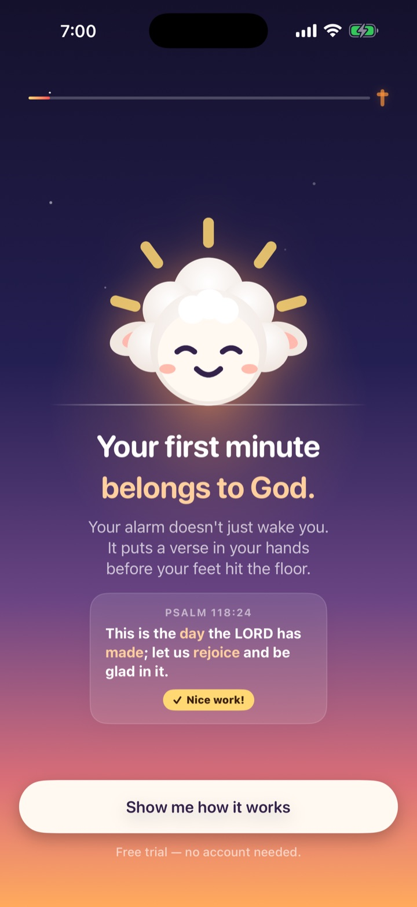

A morning alarm that won't turn off until you've completed a short Bible verse — so you actually get out of bed, and plant Scripture in your heart while you do.
Download on theApp StoreRings through Silent & Focus · No account · Bible works offline
